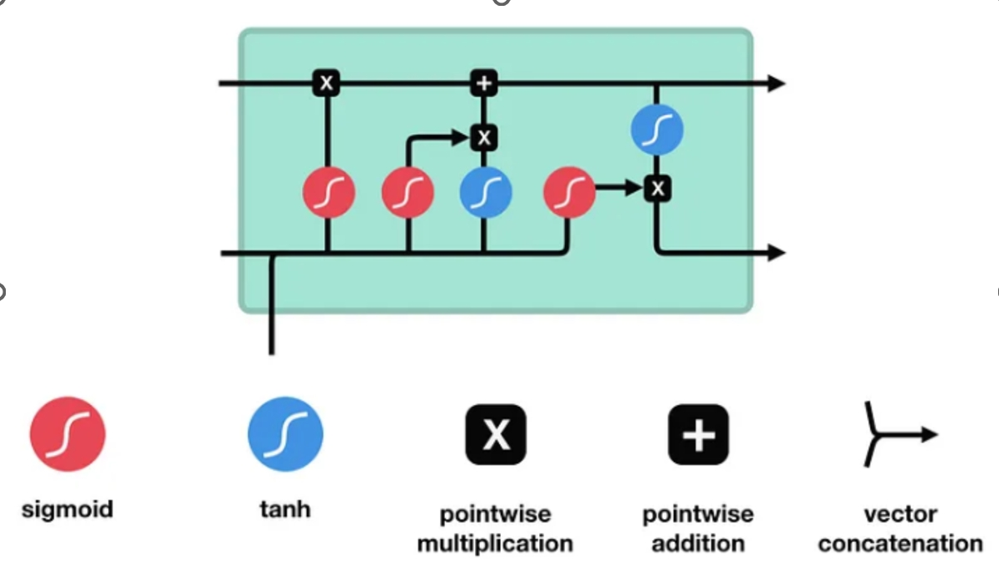
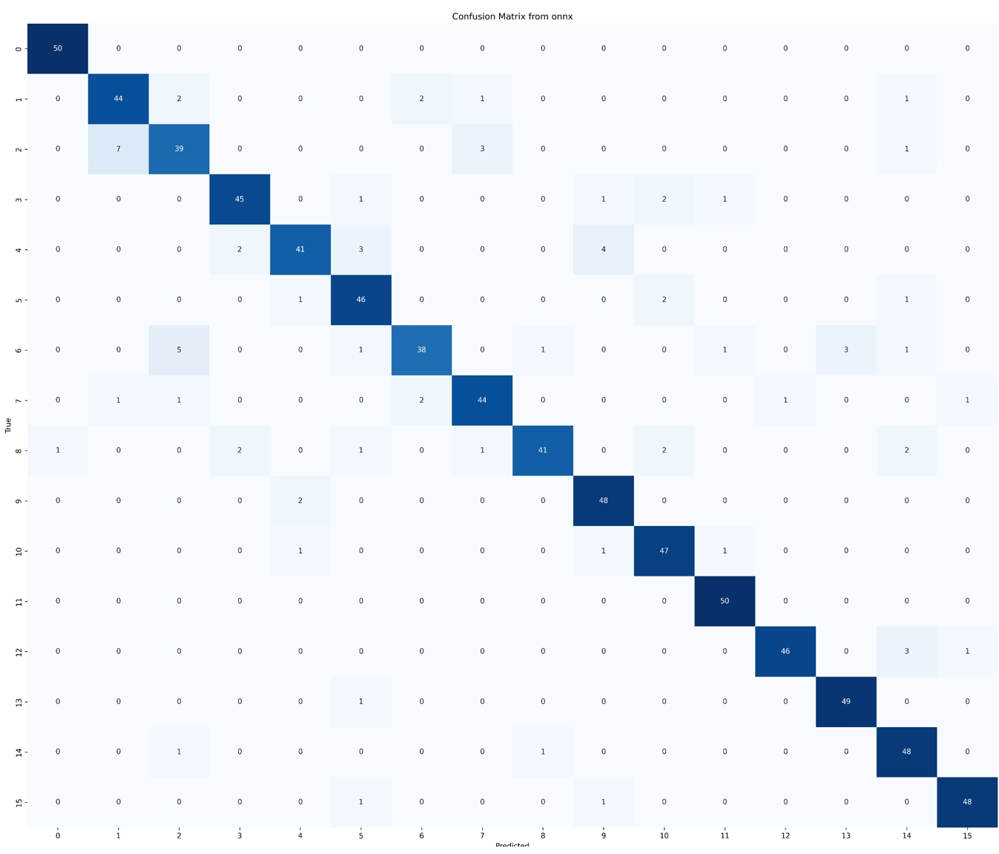

语音和声纹识别技术背景
语音识别使声音变得“可读”, 让计算机能够“听懂”人类的语言并做出反应, 是人工智能实现人机交互的关键技术之一。 语音和声纹识别在智能家居、智能手机、车载设备等领域有广阔的应用前景。这也是嵌入式设备的应用领域，由于这些领域的广大需求，嵌入式语音和声纹识别有广阔的发展空间。
当前主流语音识别技术主要在大词汇量连续语音数据集上，基于深度神经网络进行模型构建和训练，面向不同应用场景需求和数据特点对现有的神经网络不断改进。 另一方面，声纹识别技术的算法复杂度较低，数据集更加简单，当前模型的准确率已经较高。但面对噪声环境，二者都有很大的提升空间。
语音识别模型和使用（和小组成员一同完成）
成果： 使用kaldi工具创建了全新的传统DNN + HMM模型，在thchs-30，30小时中文语音数据集上，训练得到 DNN 音素预测frame准确率: 60.2967%，DNN + HMM 预测对数似然指数 为2.53658。
声纹识别模型和使用
声纹识别使用平台：pytorch
声纹识别使用数据集：HiMia
该数据用于2019年AISHELL演讲者验证挑战赛。使用同样的文本“HiMia”。它是一个智能家居场景下的固有唤醒词数据库。该数据库共包含340个说话人，每个说话人语料包含了近场麦克风拾音和远场麦克风阵列的多通道拾音。它可用于声纹识别、语音唤醒识别等研究。整个数据集分为训练集（254人），开发集（42人）和测试集（44人）。
Step1：特征提取：在读取数据的时候使用librosa完成特征提取
- # 在读取数据集的时候就完成特征提取
- class VoiceDataset(Dataset):
- def extract_features(self, file_path):
- audio, sr = librosa.load(file_path)
- mfccs = librosa.feature.mfcc(y=audio, sr=sr, n_mfcc=32)
- mfccs_mean = np.mean(mfccs.T, axis=0)
- return mfccs_mean
Step2：设计模型，选用多种模型进行比对之后发现有价值的模型有以下两种
声纹识别使用模型一：使用简单的NN，抛出一个曳光弹，让模型从wav文件到预测准确率跑通。
声纹识别使用模型二：使用LSTM模型，试图在小参数量的情况下适当提高准确率。
- # 模型一：
- class NN_net(nn.Module):
- def __init__(self, input_size=20, hidden_size=16, num_classes=8):
- super(NN_net, self).__init__()
- self.fc1 = nn.Linear(input_size, hidden_size)
- self.fc2 = nn.Linear(hidden_size, num_classes)
- self.relu = nn.ReLU()
- def forward(self, x):
- out = self.fc2(self.relu(self.fc1(x)))
- return out
长短期记忆（Long short-term memory,LSTM） 是一种特殊的RNN，主要是为了解决长序列训练过程中的梯度消失和梯度爆炸问题。简单来说，就是相比普通的RNN，LSTM能够在更长的序列中有更好的表现，更加适合处理语音、声纹类序列数据。

- # 模型二：
- class LSTM_net(nn.Module):
- def __init__(self, input_size=32, hidden_size=16, num_layers=1, nums_class=16):
- super(LSTM_net, self).__init__()
- self.lstm = nn.LSTM(input_size, hidden_size, num_layers, batch_first=True)
- self.fc = nn.Linear(hidden_size, nums_class)
- def forward(self, x):
- out, hidden = self.lstm(x)
- # print(f"out:{out.shape},out: {out}")
- out = self.fc(out)
- return out
Step3：训练模型，在多次训练对比结果之后选择如下参数，并在训练结束保存模型参数
- # 参数
- criterion = nn.CrossEntropyLoss()
- epochs = 2000
- optimizer = optim.SGD(net.parameters(), lr=0.01)
- # 训练
- for e in range(epochs):
- net.train()
- running_loss = 0.0
- for inputs, labels in train_loader:
- optimizer.zero_grad()
- outputs = net(inputs)
- loss = criterion(outputs, labels)
- loss.backward()
- optimizer.step()
Step4：模型推理，输出模型预测结果
模型一运行结果：
finished data loading, on device cuda
Epch [801/1200], Loss: 0.09994715967774391
Epch [901/1200], Loss: 0.08571631053835153
Epch [1001/1200], Loss: 0.0740496346950531
Epch [1101/1200], Loss: 0.06443944316357374
pred:[ 7 10 3 ... 4 5 9]
true:[ 7 10 3 ... 4 5 9]
get acc:0.86825 (~ 0.89) （不同参数的结果）
Epoch [1301/2000], Loss: 0.007107637634835556
Epoch [1501/2000], Loss: 0.005706332181228693
Epoch [1701/2000], Loss: 0.004725779324189716
Epoch [1901/2000], Loss: 0.004006153799497649
pred:[ 6 15 11 ... 12 14 18]
true:[ 6 15 11 ... 12 14 5]
get acc:0.902032 ~ 0.9390625
模型二混淆矩阵： 
Step5：模型转换，将模型文件转换为嵌入式设备能够运行的格式
由于要在嵌入式设备上运行模型，需要将pytorch模型转换为onnx格式，该格式有如下优点：
- 跨平台兼容性（嵌入式设备、PC）；
- 框架无关性（pytorch、tensorflow等）；
- 轻量级部署等等；
- # 导出为onnx
- dummy_input = torch.randn(16, 32) # 虚拟输入张量
- torch.onnx.export(
- net,
- dummy_input,
- f=onnx_path,
- verbose=True,
- input_names=["input"],
- output_names=["output"],
- )
- # 读取onnx模型
- net = LSTM_net(input_size=32, hidden_size=16, num_layers=1, nums_class=16)
- net.load_state_dict(torch.load("model_weights-16-0.90.pth"))
- net.eval()
Step6：运行onnx模型文件，在嵌入式平台上空间有限，故使用onnx模型时不导入torch，只使用以上基础库
- import numpy as np
- import onnxruntime
- from sklearn.metrics import accuracy_score
- from sklearn.preprocessing import StandardScaler
- import librosa
在嵌入式平台上使用同样的特征提取+数据读取，并进行预测、计算准确率。
- for inputs, labels in test_loader:
- outputs = session.run(None, {"input": inputs})
- predicted_labels.extend(np.argmax(outputs[0], axis=1))
- true_labels.extend(labels)
LSTM模型onnx格式在地平线RDK上的运行结果(历时大约100秒)：
pred:[ 1 10 13 ... 3 10 12]
true:[ 1 10 13 ... 3 10 12] get acc:0.9063125